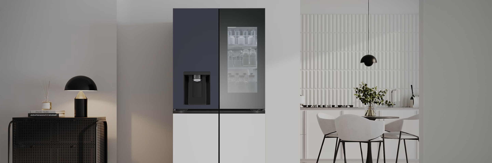
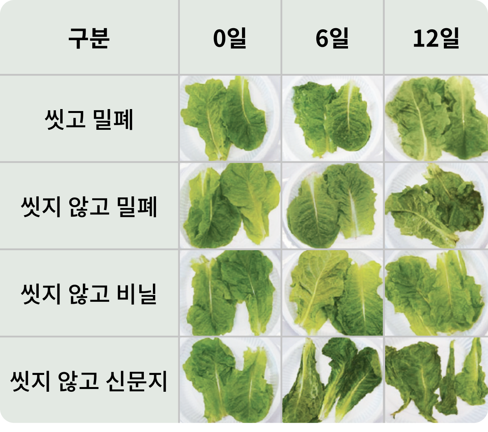

주방냉장고


보다 더 스마트한 일상
LG ThinQ의 시작

보다 더 스마트한 일상, LG ThinQ
씽큐는 사람과 가전을 AI 기술로 연결하여 더 편리하고 놀라운 일상을 만드는 LG전자의 스마트 홈 플랫폼입니다.
* 본 콘텐츠는 ThinQ 앱의 콘텐츠입니다.
아무리 성능 좋은 냉장고라도 올바르게 사용하지 않으면 의미가 없어요.
건강한 식생활을 위해 올바른 냉장고 활용법을 알아볼까요?
식품 구매는 60분 이내, 정리는 장보기 순서 반대로
구매한 식품을 카트에 넣고 그대로 마트를 계속 둘러보거나 자동차 트렁크에 보관한 상태로 여기저기 다니다 귀가하시지는 않나요? 구매한 식품의 품질유지를 위해 쇼핑의 순서와 적정시간을 지키는 것이 중요해요.
장보기 순서
생활잡화 쇼핑을 먼저 끝낸 후, 냉장이 필요 없는 식품 → 과채류 → 냉장이 필요한 가공식품 → 육류 → 어패류 순서로 장을 보는 게 좋아요.
식품은 실온 상태로 60분이 지나면 세균수가 급속히 증가해요. 따라서 식품의 구매 시간은 1시간을 넘기지 않도록 해주세요.
정리 순서
장 보기를 마치면 지체하지 말고 바로 귀가하여 장보기 순서와 반대로 어패류 → 육류 → 냉장이 필요한 가공식품 → 과채류 → 냉장이 필요 없는 식품 순서로 냉장고에 정리하는 게 좋아요.
냉장고 속 식품 보관 안전 수칙
냉장고에 식품을 넣어두면 무조건 안전하다고 생각하시진 않겠죠? 냉장고를 올바르게 사용하면 식중독을 예방할 수 있어요.
01
보관 전, 식품표시사항 확인하기
반드시 보관 방법 등의 식품표시사항을 확인한 후 표시된 방법에 따라 보관하세요.
02
실온에 방치하지 않기
냉장이나 냉동이 필요한 식품은 들고 온 후 바로 냉장실이나 냉동실에 넣어주세요.
03
깨끗한 상태로 밀봉하여 보관하기
냉장고 보관 전 이물질과 흙을 제거하고 식품용 랩이나 밀폐용기 등에 밀봉하여 보관하세요. 고기, 생선, 채소 등 신선식품과 캔, 병 등의 포장식품에는 미생물이나 곤충, 세균 등 이물질이 묻어 있어 그대로 넣으면 다른 식품까지 오염될 수 있어요.
특히, 채소는 신문지에 싸서 보관하지 마세요. 신문지의 인쇄 잉크나 다른 이물질이 식품에 묻을 수 있어요.
[보관 방법에 따른 상추의 상태변화]

04
식품의 특성과 보관 기간에 따라 보관 위치 선택하기
장기간 보존할 식품과 온도 변화에 민감한 식품은 냉동실 안쪽 깊숙이 넣으세요.
[식품 별 냉장고 속 명당자리]
· 냉동 보관 조리식품 : 생선 핏물은 생선을 빨리 상하게 하므로 씻어서 냉동실 하단에 보관하세요.
· 냉동 보관 육류·어패류 : 냉장실 문쪽은 온도 변화가 크니 금방 먹을 것만 보관하고, 오래 두고 먹을 달걀은 포장 용기 그대로 냉장고 안쪽에 보관하세요.
· 달걀 : 냉장실 신선실에 보관하되, 어패류는 씻어서 밀폐용기에 넣어 보관하세요.
· 금방 먹을 육류·어패류 : 흙과 이물질을 제거한 다음 보관하되, 채소류는 씻어서 밀폐용기에 넣어 보관하세요.
· 채소·과일류 : 흙과 이물질을 제거한 다음 보관하되, 채소류는 씻어서 밀폐용기에 넣어 보관하세요.
[냉장고 속 위치 별 온도]
냉장실 문쪽 > 냉장실 채소칸 > 냉장실 안쪽 > 냉동실 문쪽 > 냉동실 안쪽
05
냉장고 속 꽉 채우지 않기
보관 식품들 사이에 충분히 간격을 두어 냉기가 순환될 수 있는 공간을 확보해 주세요.
06
뜨거운 음식은 식혀서 보관하기
냉장고에 많은 양의 뜨거운 식품을 바로 넣으면 내부 온도가 상승하여 주변 식품에도 영향을 주게 되니 빠르게 식힌 다음 보관하세요.
07
냉장고 문은 필요할 때만 열기
냉장고 문을 너무 자주 여닫지 마세요. 냉장실은 특히 사용 빈도가 높아 온도가 상승하기 쉬우므로 문을 자주 여닫는 것은 좋지 않아요.
08
너무 오래 보관하지 않기
냉동 보관하더라도 보존 기간은 1~3주 이내로 해 주세요.
09
냉장고 속 자주 청소하기
박테리아가 번식할 수 없도록 항상 청결하게 청소하여 사용해 주세요.
같은 성능의 냉장고도 활용하는 습관에 따라 보관하는 식품의 신선도에 큰 차이가 생겨요.


LG ThinQ
ThinQ 하나로 더 좋아지는 일상
일상을 더 편하고 스마트하게 만들어주는 씽큐 앱을 지금 바로 만나보세요.
- #냉장고
- #식재료
- #냉장고정리
- #냉장고사용법
- #냉장고활용법
- #식생활
- #장보기
- #식생활안전
- #냉장고식품보관
출처 및 고지사항
[에코에너지기술연구소] 청소기 클리닝 ATLAS 개발 보고서 (2022.08)